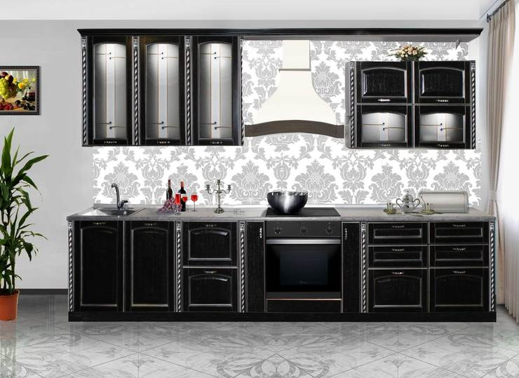
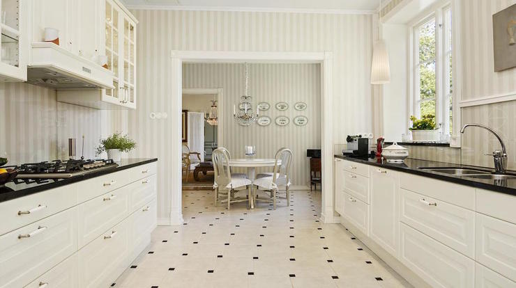
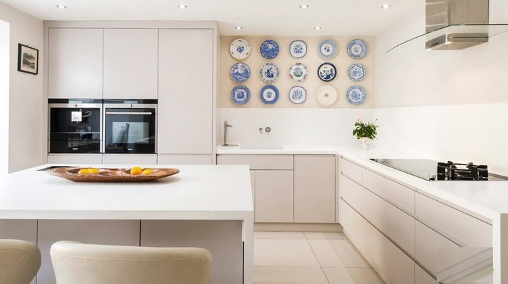
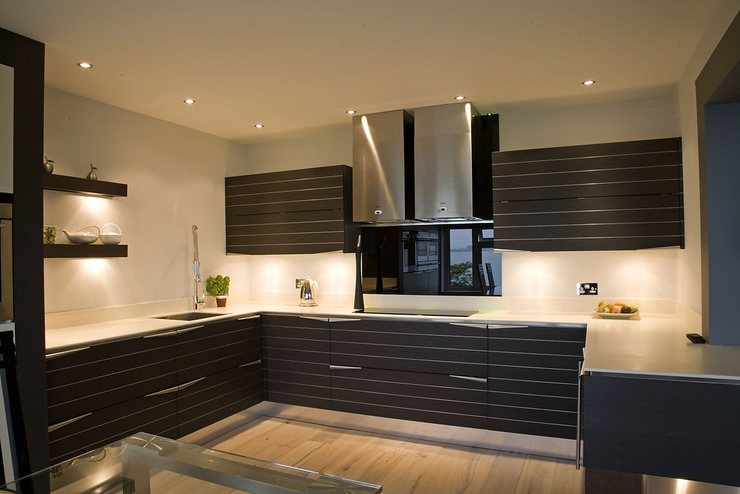
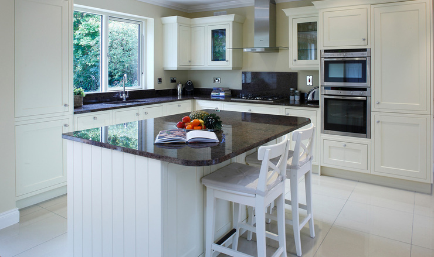
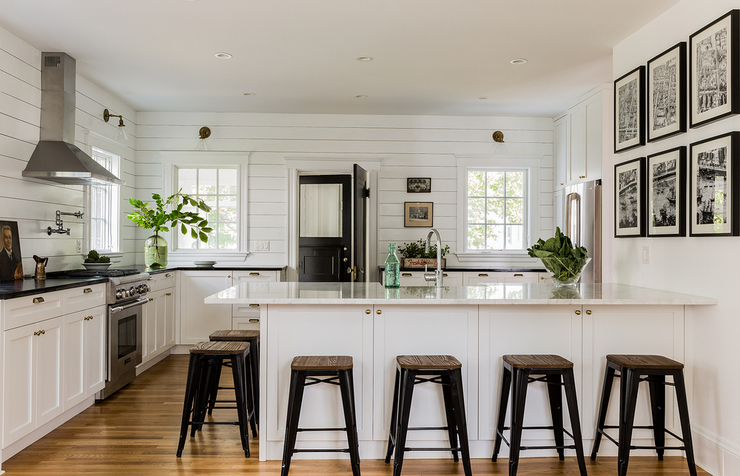

Планування кухні
Від правильного планування кухні залежить комфорт і зручність її експлуатації.
Сучасні кухні призначені не тільки для зберігання і приготування їжі, а й для прийому гостей або сімейних посиденьок. З цієї причини їх головною якістю є універсальність. При облаштуванні кухонного простору варто враховувати безліч факторів. Правильне поєднання кухонного гарнітура, меблів для кухні і інших елементів на обмеженому просторі вимагає ґрунтовного підходу до справи, але зате в результаті ви отримаєте зручну і функціональну кухню, відповідну вашим смакам.
Принципи вибору планування
Перш ніж приступати до проектування майбутньої кухні, необхідно спробувати скласти власну картину ідеального
кухонного приміщення. Для цього потрібно враховувати особисті уподобання, розпорядок, звички і смаки.
Допомогти у вирішенні даного завдання вам допоможуть деякі питання, давши відповіді на які, ви
конкретизуєте
свої бажання:
-
Скільки людей буде користуватися кухнею?
- Чи є діти?
- Чи планується ще поповнення?
- Яка кількість людей буде одночасно знаходиться на кухні?
-
Де ви звикли організовувати трапези, приймати гостей?
- Скільки людей зазвичай бере участь в прийомі їжі?
- Чи планується часте використання кухні для готування або в основному ви харчуєтеся поза домом?
-
Які атрибути є для вас обов'язковими?
- Ви не зможете обійтися без великого обіднього столу, телевізора, барної стійки або приємного вигляду з вікна?
-
Як ви ще використовуєте кухонний простір?
- Може бути ви любите там читати або приймати гостей, прати або працювати за комп'ютером?
-
Заздалегідь продумайте колірне оформлення приміщення.
- Постарайтеся знайти гармонійні поєднання кольорів стін, підлоги, стелі і кухонних меблів.
-
Оцініть наявну площу кухні, подумайте, як можна найбільш ефективно її використовувати.
- Визначте необхідну кількість і розташування робочих поверхонь.
-
Яка побутова техніка вам необхідна?
- Що з неї буде мати вбудовану конструкцію, і які елементи можна придбати окремо?
-
Яке ви хочете мати освітлення?
- Яскраве центральне або приглушене точкове?
- Чи є необхідність установки регулятора яскравості?
-
Визначтеся з зразковим обсягом шаф для зберігання.
- Чи робите ви значні запаси продуктів або купуєте в міру необхідності?
- Яка кількість кухонного начиння і посуду потрібно розмістити?
Отримавши відповіді на ці питання, можна скласти попередній проект кухні, яка ідеально відповідає вашим запитам. При виборі планування необхідно знати, що простір зазвичай функціонально поділяється на робочу і обідню зони, а також прохід.Найбільш затребуваною є робоча зона, яка в свою чергу також поділяється на зони зберігання, готування та мийки. Оптимальним розташуванням цих зон вважається трикутник: варильна поверхня, миття і холодильник при цьому утворюють вершини трикутника. Таке розташування робить процес готування максимально комфортним і раціональним.
Помилки при виборі кухні
Щоб уберегти вас від помилок при облаштуванні простору на кухні, розповімо про найпоширеніші:
-
Висота стільниці
- Стандартна висота стільниці в готових кухнях становить 85 см. Для зручності рекомендується коригувати рівень відповідно до власного зростанням. Це можна зробити за допомогою спеціальних хромованих ніжок.
-
Мийка
- Якщо плануються більший обсяги немитого посуду, то рекомендується встановлювати велику мийку, має кілька чаш для миття.
-
Фурнітура
- Ручки кухонного гарнітура має важливе значення, так як їх експлуатація відбувається щодня. Ручки у вигляді заглиблень є не зовсім зручними, тому рекомендується використовувати виступаючу фурнітуру.
-
Тканини
- Бажано відмовити від використання на кухні будь-яких видів тканин, з тому числі і в складі меблів. Тканини сильно вбирають в себе запахи і випаровування, і тому вимагатимуть частого чищення.
Види планування
Існує безліч варіантів планування кухні, кожен з яких підходить для певних розмірів і форм приміщення, а також надає різні способи організації робочого простору:
Однорядна кухня.
Стандартне прямолінійне розташування, яке застосовується в більшості типових проектів. Добре підходить для невеликих і середніх приміщень прямокутної форми.
Дворядна кухня.
Для реалізації даного варіанту ширина приміщення повинна становити мінімум 2,5 метра. Таке розташування дозволяє комфортно розмістити всю наявну посуд і побутову техніку. Недоліком можна вважати неможливість установки в приміщенні обіднього столу.
Кутова кухня.
Дана планування ідеально підходить для квадратних кухонь. Вона дозволяє не тільки розділити простір на функціональні зони, але і з комфортом розмістити інші елементи меблів.
П-подібна кухня.
Оптимальний варіант для кухонь, в яких вікно розташовується на поздовжній стіні. Застосовується для великих і малих площ і дозволяє максимально ефективно використовувати кутовий простір.
Острівна кухня.
Такий тип планування доступний тільки для власників кухонних приміщень великої площі. Під островом в даному випадку мається на увазі винесений в центр приміщення, окремої стоїть модуль кухонного гарнітура. Даний острівець є дуже зручним і надає особливий стиль інтер'єру.
Вільне планування.
Сюди можна віднести всі інші типи планування, які не входять до попередньої категорії. Найчастіше це дизайнерські проекти або суміщення кілька типів розташування меблів.
Незалежно від обраної планування, варто пам'ятати, що головним критерієм все ж є власне зручність використання кухні, а також особисті смакові та естетичні уподобання.